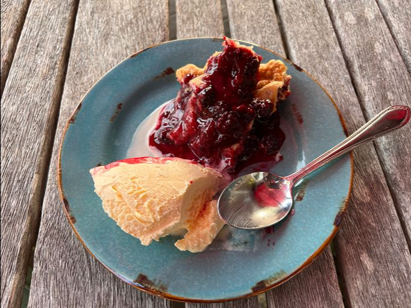
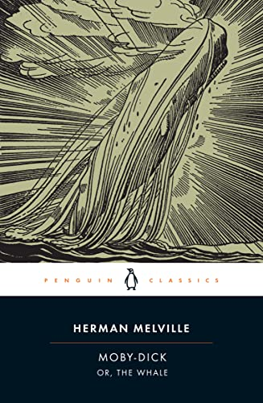
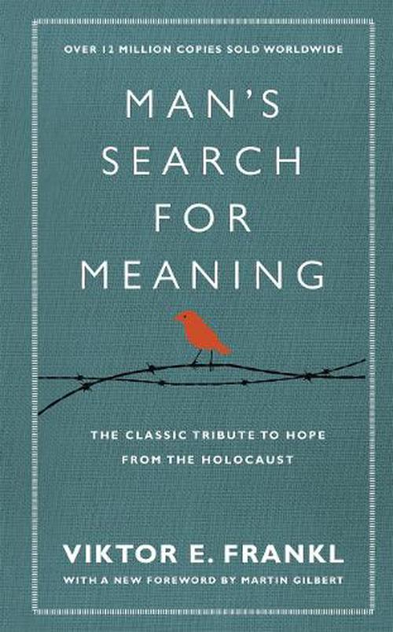

| Title | Cover | Author | Summary |
| Moby Dick |  |
Herman Melville | Narrated by the sailor Ishmael, the story follows the obsessive, maniacal quest of Captain Ahab to hunt down and destroy Moby Dick, the giant white sperm whale that previously bit off his leg, ultimately leading to the destruction of the whaling ship Pequod and her entire crew. |
| The Lord of the Rings: The Fellowship of the Ring | J.R.R. Tolkien | Frodo Baggins inherits the One Ring from his cousin Bilbo and must take it from the Shire to Rivendell, where a council decides it must be destroyed in Mordor. A fellowship is formed to protect him on this journey, which is fraught with danger. | |
| Man’s Search for Meaning |  |
Victor Frankl | Man’s Search for Meaning is a 1946 book by Viktor Frankl chronicling his experiences as a prisoner in Nazi concentration camps during World War II, and describing his psychotherapeutic method, which involved identifying a purpose to each person's life through one of three ways: the completion of tasks, caring for another person, or finding meaning by facing suffering with dignity. |
| Walden | Henry David Thoreau | Walden, or Life in the Woods is a classic American book by Henry David Thoreau, published in 1854, that chronicles his two-year experiment in simple living in a cabin near Walden Pond in Massachusetts. |